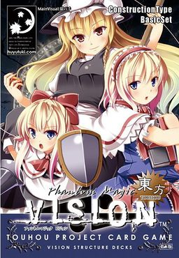

- Welcome to Touhou Wiki!
- Please register to edit. For assistance, check in with our Discord server or IRC channel.
Phantom Magic Vision
Jump to navigation
Jump to search
| Phantom Magic Vision | |
|---|---|
|
 | |
| Developer |
Huyutuki |
| Publisher | |
| Released |
2006 |
| Genre |
Dueling Card Game |
| Gameplay |
Two or four player duel |
| Platforms |
Table top |
| Requirements |
50 card deck |
Phantom Magic Vision is a fan-made Touhou Project card game by Huyutuki.
Gameplay[edit]
- See Gameplay
This is typically a two-player game, however there is a variant for a four-player game. Players tap "nodes" to play character, command, and spell cards to progress through the game.
Deck construction consists of exactly 50 cards with no more than three copies of each card.
Each player starts with 25 life, and players lose either when their life equals zero or they can no longer draw cards from their deck.